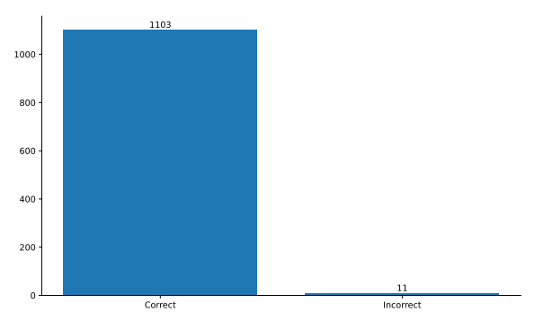
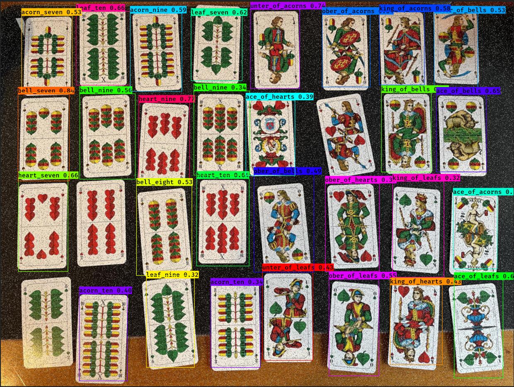
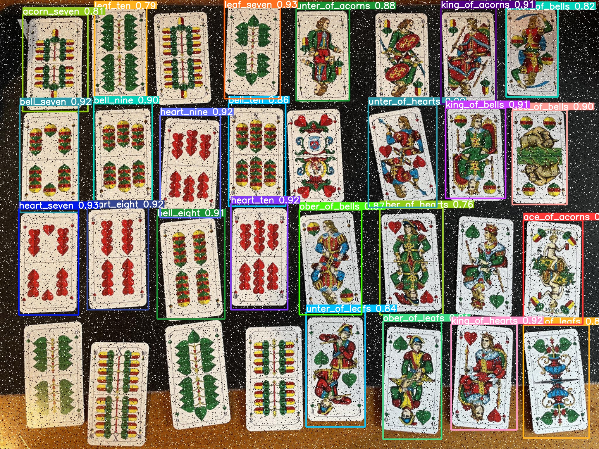
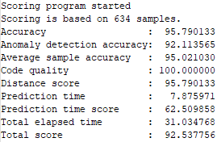

This is my personal portfolio where I link some projects I created during my master study program.
Intro
I am currently enrolled in a master program called Artificial Intelligence and Data Science at the Deggendorf Institute of Technology.
My master studies is a join program with the University of South Bohemia, where I've finished my first semester.
I am in the third semester and in the progress of finishing my master thesis. I have 1,5 years of experience as a Software Engineer and was studying the bachelor course Applied Computer Science at the Deggendorf Institue of Technology.
Work
As a Software Engineer I was developing a C++ application which collects sensory device data and sends it to an IoT Edge device or directly
to a Azure Cloud endpoint where it is routed to a File Storage instance. After that the data will be queried and displayed by dashboards.
Through this work I was able to get professional experience in following technologies:
C++
Python
Docker
Microsoft Azure
Linux
Deployment of dockerized applications
IoT
Study Projects
During my master studies I had to do several projects including a Naive Bayes Spam Filter and two object detection projects.
To take a look at the projects use the navigation bar below.
Naive Bayes Spam Filter
As the title says this project is a custom spam filter based on the Naive Bayes algorithm. This was a team project of 3 people.
For this project we used an open-source sms message dataset from Kaggle.
To detect whether a message is spam or ham we used multinomial Naive Bayes.
From 1124 messages our algorithm could classify 1103 correctly and 11 incorrectly.

Detecting bavarian playing cards
This was a semestral project in the scope of a course called Computational Intelligence during my studies at the University of South Bohemia.
We had to create our own dataset and could use which object detection method best suits our use case.
I chose to use YoloV3 and YoloV5 to tackle this project.
To the dataset:
The dataset consists of 136 images in total, where the train/val/test split is 110, 20 and 6, respectively. I've labeled the images with an online tool called roboflow.
Here you can see a result image for both algorithms:
Result for YoloV3

Result for YoloV5

Although the result for both algorithms is not perfect, it was sufficient for this course.
To get better results I could've used more training data and also train for more epochs. Another option would be data augmentation during
the training process. But this would result in longer training duration, which was the reason for not using this approaches for the project.
Detecting pills in blister packs
This project was created during my second semester in the scope of the course Computer Vision.
The task came from an Engineering Competition held by the company Rohde&Schwarz. Our team consisted of three members and ranked 7th.
The official problem description is following:
The problem is an image segmentation problem. You are provided with microwave images of different pill blisters.
Each image consists of three slices with a spacing of 2.5 mm.
Your goal is to detect, localize, and classify present and missing pills. You can find a picture of a pill blister and the corresponding microwave image below.
Result metrics
Our first attempt was a small CNN with two output layers. The first outputs the centroid coordinates of the detected class and the second one
was for outputting the class of the pill. This model had a really fast prediction time but lacked in class accuracy.
Our final attempt was the usage of YoloV5. To use it, we had to convert the centroid coordinates into bounding box coordinates. With this algorithm the
accuracy in detecting the class improved drastically. Therefore we sticked with Yolo for this competition.
Unfortunatelly, I cannot show example images due to confidentiality issues, but the metrics for my final submission look like this:
